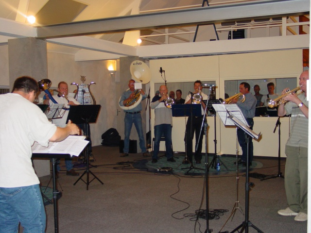
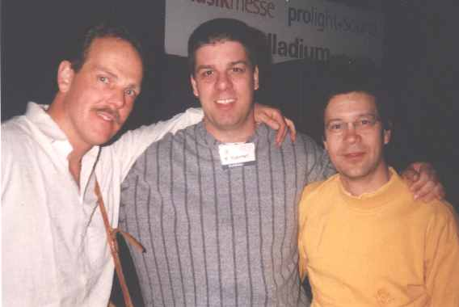
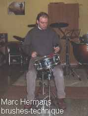
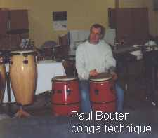
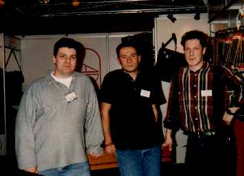

Gallery
Foto’s
Four decades of slagwerk in pictures — ensembles en concerts, workshops en lessons, meetings met great percussionists, en the very beginning in Vijlen. Click any foto to enlarge.
Selected
Highlights
Encounters met Billy Cobham, Thomas Lang, Jim Chapin, Nebojša Živković en many others — en moments met ensembles en at the music fair in Frankfurt.















Fotoarchief
As director
Slagwerkensemble Musikschule Heinsberg
First rehearsal of Saul Goodman’s Scherzo for trio — xylofoon: Zoë; two kleine trommen: Paul; pauken: Karl.

Slagwerkensemble Musikschule Eschweiler
First rehearsal of 2026 met Sander; Nacht der offenen Kirchen 2024; Tag des Ehrenamtes 2023; en the years 1991–2022.


St. Caecilia Broeksittard
First concert at Forum Sittard (2022); met rock group Powerized (2024); concert at Adams together met Ensemble JMS Eschweiler; summer concert.


Slagwerkgroep Concordia Einighausen


Slagwerkensemble Kreato Thorn


Drumband St. Stephanus Dieteren


St. Caecilia Schinveld

Samba bands — Ofden en Alsdorf


Youth slagwerk ensembles
Concert Langedael Vaals; Einighausen; Schimmert; Broeksittard.

Fotoarchief
Workshops en projects
Workshops
Maasniel, Maasbracht, Mausbach, Eschweiler, Thorn, Ofden, Alsdorf, Heythuysen, Heerlen, Bunde en Sittard.


Making instruments


Theory course


Fotoarchief
Lesgeven
Colleagues
Met Jo en Rafael.

Met famous percussionists
Marcel van Vugt, Mark Andreas Giesecke, Wessela Kostowa, Hans Beurskens, Paul Bouten, Thomas Lang en Vic Firth.

Exams


As slagwerk teacher


Concours during corona, 2021


School of Music Eschweiler


School of Music Gangelt


Fotoarchief
As a player

Orkesten en ensembles
Conservatory Maastricht (playing Carousel), Thorn, Treebeek, Maastricht, Thorn en Stolberg.


In church met Gisela Freialdenhoven, organ (2024)


Fotoarchief
Early years
Dirgelländer en Vijlen


Limburgse Jagers


Guitar en bands
Guitar (around 1980), the band of the Sophianum (around 1980) en the Gesamtschule band.


Slide trombone
Andres Muller, Jo Pelzer en me (around 1970); parade in Vijlen (around 1971).